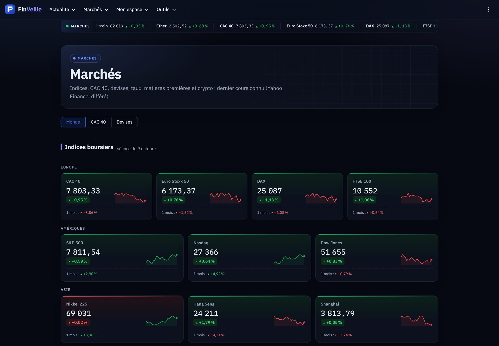

FinVeille
La veille financière mondiale, triée et expliquée.
L'actualité de 12 sources, les marchés en direct et un assistant IA qui cite ses sources. En français, gratuit.
PythonStreamlit
IA · RAGPostgreSQL

S&P 500
7 811,54
▲ +0,59 %